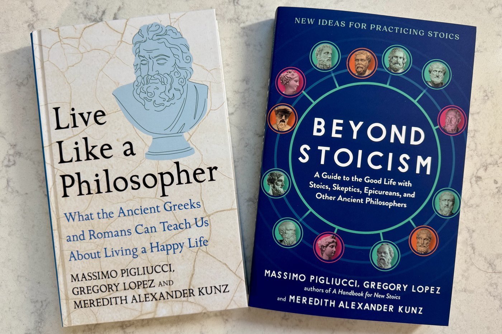

Meredith Alexander Kunz · Writer & Communications Leader
Complex ideas,
made clear.
Whether it starts as a research breakthrough or a two-thousand-year-old idea, the job is the same: make it clear enough that people can act on it.
I'm Meredith Alexander Kunz, Director of Research and Innovation Communications at Adobe, where I tell the story of AI breakthroughs at the cutting edge of computer science. I'm also co-author of Beyond Stoicism, a guide to the good life drawn from thirteen ancient philosophers, and creator of The Stoic Mom, where I've written on parenting and practical philosophy since 2016.
Adobe
Director, Research and Innovation Communications — leading the team that tells the story of a world-class AI research lab.
About my work → AuthorBeyond Stoicism
With Massimo Pigliucci and Gregory Lopez. Published in the UK as Live Like a Philosopher.
Selected work → BlogThe Stoic Mom
Writing on parenting, attention, and practical philosophy since 2016 — more than fifty posts on Substack.
Read the blog → CoachingCo-Active Coaching
Certified as a CPCC and an ACC, with an approach rooted in Stoic principles and personal leadership.
Work with me →
The book
Beyond Stoicism
A Guide to the Good Life with Stoics, Skeptics, Epicureans, and Other Ancient Philosophers
Written with Massimo Pigliucci and Gregory Lopez. Published in the UK as Live Like a Philosopher, and out now in Spanish, with a Chinese edition on the way.
Listen
The Philosopher's Compass
My podcast, for anyone seeking philosophical inspiration, guidance, and direction. Watch or listen — new episodes appear here automatically.
Contact
Get in touch
For speaking, press, coaching inquiries, or just to say hello.
I read every message myself and usually reply within a few days. Prefer email? Write to meredith.kunz@pm.me.